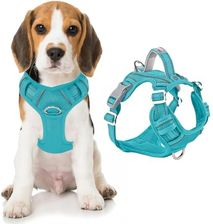

1Uzda / szelki „bez ciągnięcia” dla psa
Zwierzęta
Uzda albo szelki, które zatrzymują ciągnięcie psa na smyczy. Rozwiązuje codzienny problem na spacerze.
- Koszt z dostawą
- 28 zł
- Sprzedaż
- 229 zł
- Zysk / szt. (ROAS 2,5)
- 54,80 zł
- Mnożnik
- 8,2×
Koszt sztuki w Polsce
| Zakup towaru | 16,25 |
| Transport z Chin | 4,47 |
| Cło | 0,83 |
| VAT importowy (odliczasz) | 4,96 |
| Pakowanie | 1,50 |
| Koszt z dostawą | 28,00 |
Zysk z jednej sprzedaży
| Cena bez VAT | 186,18 |
| Koszt sztuki (bez VAT) | −23,04 |
| Bramka płatnicza | −3,96 |
| Wysyłka do klienta | −12,20 |
| Zwroty i reklamacje | −0,57 |
| Reklama: 229 zł ÷ ROAS 2,5 | −91,60 |
| Zysk / szt. | 54,80 |
ROAS 2,5 = za 1 zł reklamy wraca 2,5 zł sprzedaży. Zarabiasz, dopóki ROAS nie spadnie poniżej 1,56. Mnożnik = sprzedaż ÷ koszt z dostawą. Partia: cena hurtowa 4 $/szt., partia 300 szt., fracht 4,47 zł/szt. (200 g), cło 4%.
Lettvik: 31 reklam, ceny 229 i 405 zł, reklama-historia założycielki. Katlyma: 31 nowych reklam w 5 dni (Black Friday −60%).
Najlepszy wynik przeglądu: tani w produkcji, drogi w sprzedaży (8×). Pasuje do marki zwierzęcej obok obroży z grawerem. Reklama „przed/po” na spacerze robi się telefonem.
Koszt fabryczny (4 $) to szacunek. Rozmiary dla różnych ras – potrzebna dobra tabela.
Cena sprzedaży: ✓ cena wpisana ręcznie. Cena zakupu: ⚠ szacunek – do potwierdzenia u fabryki. W gorszym wariancie (sprzedaż niżej, zakup drożej o margines ze źródła): 37,19 zł. Uwaga: cena zakupu do potwierdzenia.
ROAS 1,8: 19,18 zł, ROAS 2,5: 54,80 zł, ROAS 3,5: 80,97 zł. Liczone dla ROAS 2,5 (założenie (brak Twoich testów)).
Wszyscy mówią „przednie zapięcie” i „mniej ciągnięcia”, ale nikt nie pokazuje realnego spaceru krok po kroku ani nie mówi uczciwie, że szelki to narzędzie, a nie magia – nowa marka może pokazać prawdziwy test na własnym psie i jasne wskazówki, jak dobrze dopasować i używać szelek w pierwszym tygodniu.
- Pierwszy spacer: przed i po: Telefon w ręku, pies na starych szelkach napina smycz pod drzwiami. Głos: „Tak wyglądało moje wyjście na spacer.”
- Dlaczego pies ciągnie? Prosty rysunek: Kartka papieru i marker: rysujesz psa i strzałkę do przodu. „Twój pies nie jest uparty.”
- Dopasowanie w 60 sekund: Zbliżenie na szelki rozłożone na podłodze i napis „Najczęstszy błąd: źle dopasowane”.
Na podstawie 14 reklam konkurencji w Polsce.